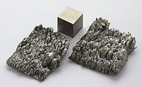

Numero atomico: 21
Massa atomica: 44,96
Temperatura di fusione (°C): 1541
Temperatura di ebolizione (°C): 2836
Energia di prima ionizzazione (kj/mol): 631
Elettronegatività (secondo Pauling): 1,36
Densità: 2,99
Numeri di ossidazione: +3
Configurazione elettronica: 1s2, 2s2, 2p6, 3s2, 3p6, 3d1, 4s2
Maggiori Informazioni